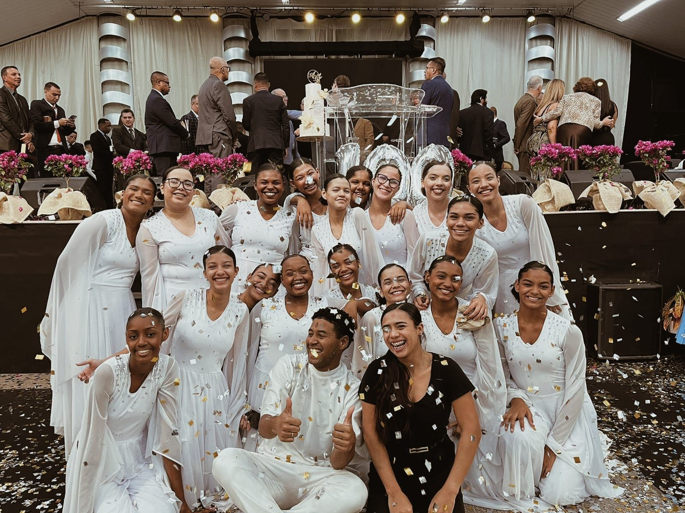

ADESC DANCE
Ministério de Madureira
Somos o ministério de dança da Igreja ADESC – Ministério de Madureira, com o propósito de adorar a Deus com excelência e entrega. Nosso objetivo é levar a presença de Deus através da dança, tocando vidas com cada movimento.
Mais do que um grupo, somos uma família unida em amor. É o propósito. Acreditamos na força da unidade: oramos, dançamos e crescemos juntas.
Queremos ser instrumentos de transformação, onde quer que o Senhor nos leve. Que Cristo seja visto em nós em cada passo! Não deixe de nos acompanhar, assim você viverá conosco esta grande jornada de fé, cumplicidade, e mover de Deus.